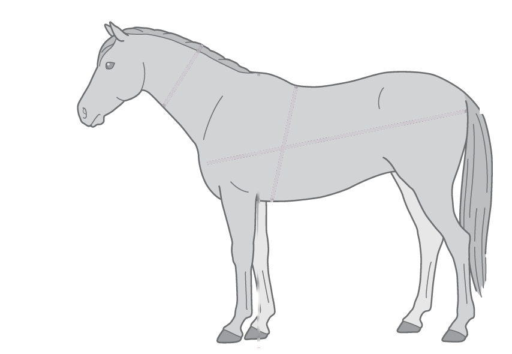
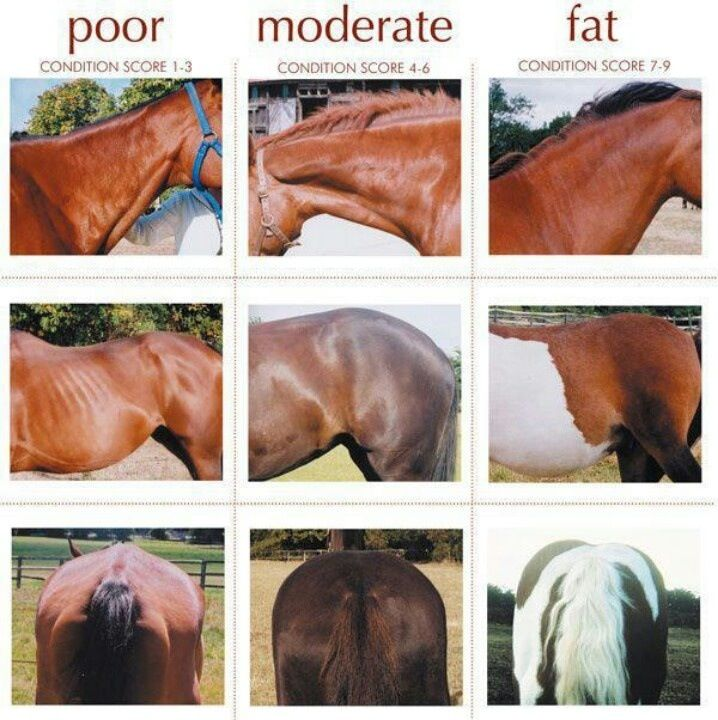
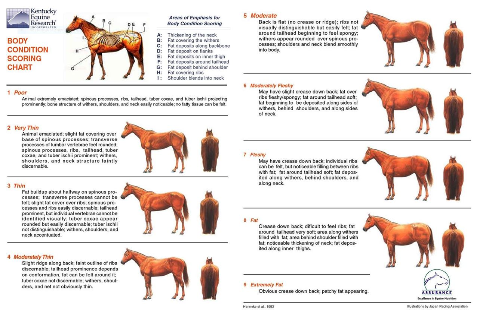
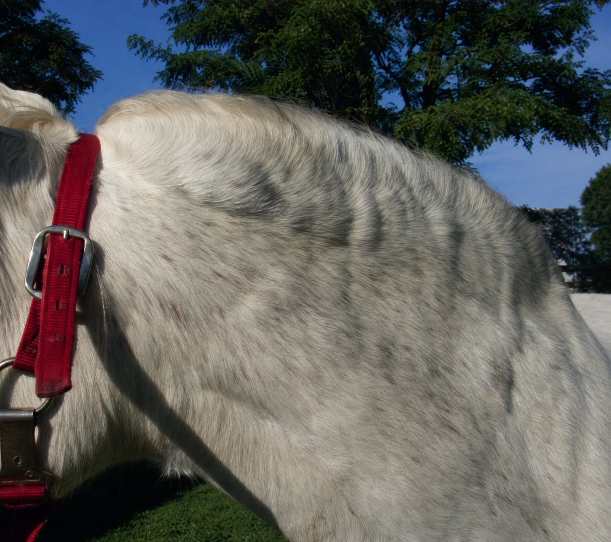
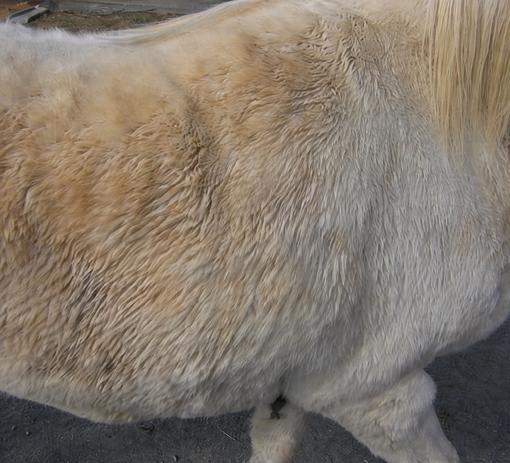
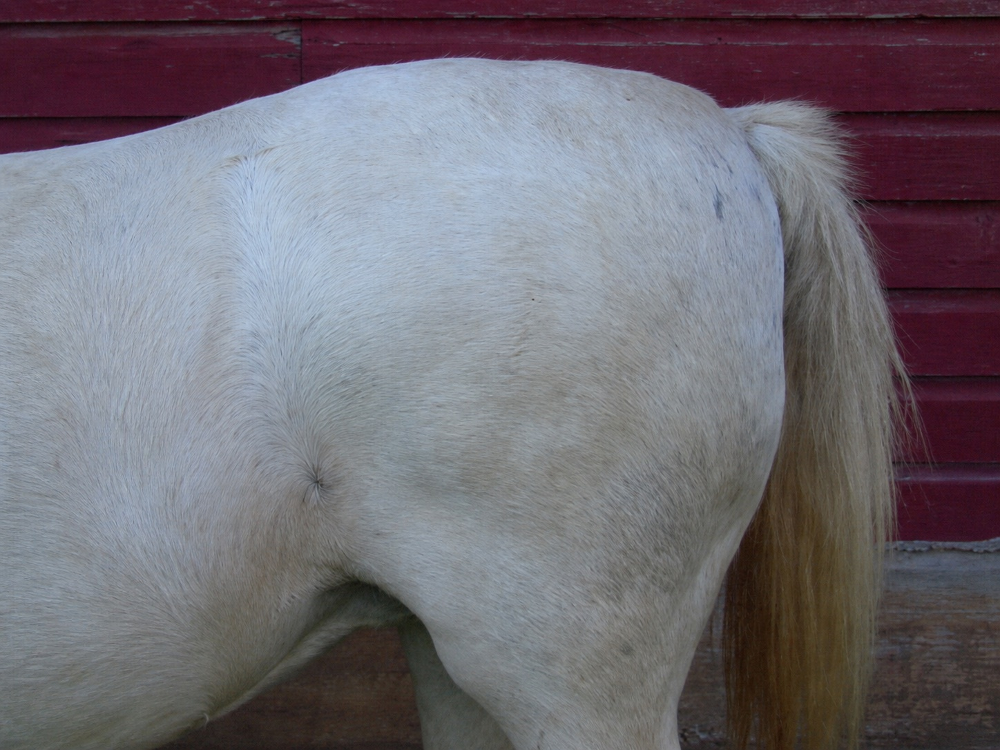
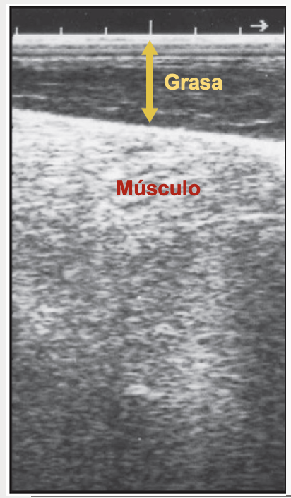
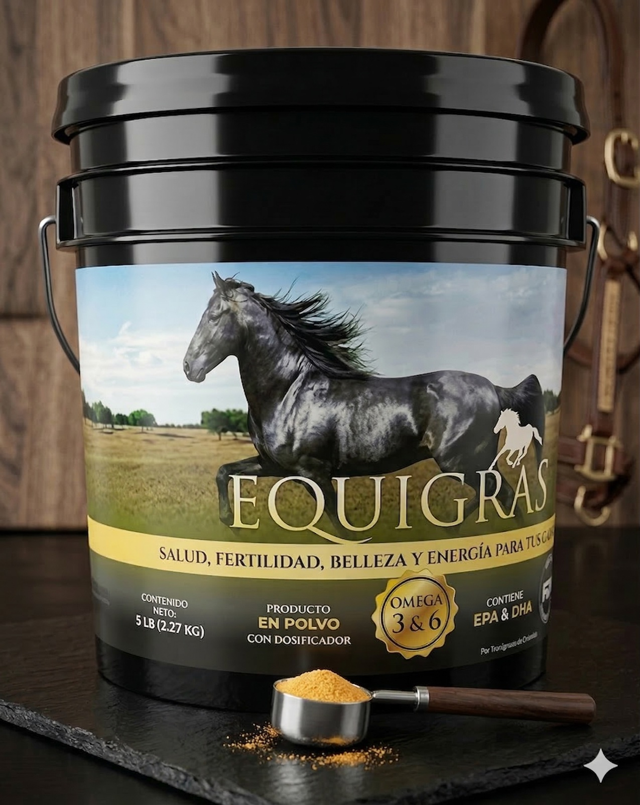

📐 Calcula el peso de tu caballo con las medidas de la gráfica
Estimación científica del peso vivo (PV) ajustada a la gráfica oficial de Carter & Dugdale (2014) / RRHM (2021).
📏 Mediciones Morfométricas
💡 Instrucciones: Ingresa o desliza las medidas de tu caballo a continuación. La figura anatómica y la estimación del peso vivo se calculan automáticamente más abajo.

Rango probable: 443 - 509 kg (intervalo de concordancia 95%)
Fuente: Martinson, K. L., et al. (2014). J. Anim. Sci.
Usa las cuatro medidas: perímetro torácico, longitud corporal, alzada, circunferencia de cuello.
Estas ecuaciones estiman el peso, no lo determinan. Su sesgo es sistemático dentro de un mismo animal, por lo que son más confiables para seguir cambios de peso en el tiempo que para establecer el peso absoluto.
📐 Índices Morfométricos
El índice G:H es el predictor más fuerte de condición corporal entre los índices morfométricos evaluados (Carter et al., 2009). El índice NC:H se asocia a adiposidad regional del cuello y riesgo metabólico. Estos índices no son comparables entre caballos y ponis.
📊 Comparativa de Modelos Validados
| Ecuación / Fuente | Peso Estimado | Cita / Población |
|---|
Toma las mediciones con cinta flexible de costurero. La circunferencia torácica (G) se mide justo detrás de la cruz y el codo, donde se coloca la cincha delantera. La longitud corporal (L) abarca desde la articulación escápulo-humeral hasta la tuberosidad isquiática. Las fuentes secundarias discrepan sobre si Carroll & Huntington midió el perímetro sobre el punto más alto de la cruz o en su base, mientras que Martinson lo midió en la base de las crines: las ecuaciones del selector no fueron todas calibradas sobre el mismo punto anatómico exacto.
Uso de las medidas: cada modelo declara qué medidas usa para calcular el peso (ver la ficha bajo el resultado). Las medidas que no entran en la ecuación activa no se descartan: alimentan los índices morfométricos G:H y NC:H, la categoría de dosificación de EQUIGRAS® y la verificación del rango de validez del modelo.
Glosario de Términos de la App Entiende cada sigla y unidad en lenguaje sencillo
Esta app usa siglas y unidades técnicas de la nutrición equina. Aquí las explicamos de forma clara, para que entiendas qué significa cada número que ves en pantalla.
⚖️ Peso y Medidas Corporales
- PV — Peso Vivo
- El peso corporal total del caballo, en kilogramos (kg) o libras (lb). Es la base de todos los cálculos de la app: energía, agua y dosis de suplemento dependen de este número.
- NC — Circunferencia del Cuello
- Medida alrededor de la parte media del cuello. Además de ayudar a estimar el peso, es una señal de acumulación de grasa relevante en el síndrome metabólico equino.
- H — Altura a la Cruz
- Distancia vertical desde el suelo hasta el punto más alto de la cruz (donde termina el cuello y comienza el lomo). Se usa como referencia de tamaño corporal.
- G — Circunferencia de la Cincha (Torácica / Cardíaca)
- Medida alrededor del tórax, justo detrás de la cruz y el codo, donde se coloca la cincha de la montura. Es la medida con mayor peso en las fórmulas de estimación.
- L — Longitud Corporal
- Distancia desde la articulación del hombro (escápulo-humeral) hasta la punta del isquion (punta de la nalga). Junto con G, aproxima el volumen corporal del caballo.
- BCS / CC — Condición Corporal (Escala Henneke 1–9)
- Escala visual y táctil que evalúa la grasa subcutánea del caballo, no su peso. Va de 1 (muy flaco) a 9 (obeso); 5 es el punto óptimo para la mayoría de caballos adultos en mantenimiento.
🔥 Energía y Alimentación
- Mcal — Megacaloría
- Unidad de energía equivalente a 1.000 kilocalorías (kcal). En nutrición equina se usa para expresar cuánta energía necesita el caballo o cuánta aporta el alimento, siempre por día (Mcal/día).
- ED — Energía Digestible (Mcal ED/día)
- La energía que el caballo realmente absorbe del alimento, después de descontar lo que se pierde en las heces. Es la unidad que usa el NRC (2007) para calcular cuánto debe comer un caballo según su peso y actividad.
- EM — Energía Metabolizable (Mcal EM/d)
- Es la energía "neta" disponible para el cuerpo: a la Energía Digestible se le restan también las pérdidas en orina y gases digestivos. Suplementos como EQUIGRAS® declaran su aporte en EM porque refleja mejor la energía que el caballo puede usar realmente.
- MS / IMS — Materia Seca / Ingesta de Materia Seca (kg MS/día)
- Es el alimento sin contar el agua que contiene (forraje, concentrado, etc.). La IMS es la cantidad total de comida "seca" que el caballo debe consumir por día, normalmente entre 1.5% y 2% de su peso vivo.
🐟 Grasas y Ácidos Grasos Esenciales
- Omega-3
- Familia de ácidos grasos esenciales con efecto antiinflamatorio. El caballo no los produce por sí solo: deben venir de la dieta o de un suplemento como EQUIGRAS®.
- EPA — Ácido Eicosapentaenoico
- Un tipo de Omega-3 que apoya una respuesta inflamatoria saludable, la función articular y la piel.
- DHA — Ácido Docosahexaenoico
- Otro tipo de Omega-3, clave para el sistema nervioso, la visión y la salud reproductiva del caballo.
- Omega-6 (Ácido Linoleico)
- Otro ácido graso esencial, pero con efecto más bien proinflamatorio en exceso. El cuerpo necesita tanto Omega-3 como Omega-6, pero en un equilibrio adecuado.
- Relación Omega 6:3
- Indica cuántas partes de Omega-6 hay por cada parte de Omega-3 en la dieta. Una relación baja (cercana a 3:1 o 4:1) es más saludable; las dietas con mucho cereal suelen tener relaciones desbalanceadas de 15:1 o más, lo que favorece la inflamación.
💧 Agua e Hidratación
- L/día — Litros por día
- Cantidad de agua que el caballo bebe al día. Varía según su peso, la temperatura ambiental, el ejercicio y el tipo de dieta (el heno seco aumenta el consumo de agua frente al pasto fresco).
💊 Dosificación
- g/día — Gramos por día
- Cantidad diaria recomendada de un suplemento, como EQUIGRAS®, que se mezcla en el alimento del caballo según su categoría (mantenimiento, trabajo, gestación, lactancia) y su alzada.
Fuentes consultadas: National Research Council (NRC, 2007) Nutrient Requirements of Horses; Carter, R.A. & Dugdale, A. (2014); Henneke, D.R. et al. (1983) Equine Veterinary Journal; Martinson, K. et al. (ecuación morfométrica multivariada); Lawrence, L. (2014).
🌾 Requerimientos Nutricionales & Suplementación EQUIGRAS®
Estimación de Energía Digestible, consumo de agua e ingesta recomendada según estado fisiológico (NRC 2007, INRA 2015, Lawrence 2014).
⚙️ Estado Fisiológico y Actividad
• 1 kg de leche de yegua contiene ~ 500-792 kcal, 2% proteína y 2% grasa.
• La yegua en pico de lactancia produce entre 10 a 25 kg/día de leche.
• Una yegua requiere ganar de 16 a 20 kg de peso para elevar 1 punto de CC (1 kg ganancia = 20 Mcal ED).
Simulador de Consumo de Agua Estimaciones derivadas de NRC 2007
⚡ Balance Energético & Ingesta de Materia Seca
Suplementación con EQUIGRAS®
Equinos adultos > 1.45 m en mantenimiento / trabajo (150 g/día)
* La energía del requerimiento se expresa como ED (energía digestible); el aporte de EQUIGRAS® se declara como EM (energía metabolizable). No se comparan ni se restan directamente porque son escalas energéticas diferentes.
| Etapa Productiva / Actividad | Hasta 1.45 m Alzada | Superior a 1.45 m Alzada |
|---|---|---|
| Yeguas Lactantes & Competencia / Deporte | 150 g/día | 200 g/día |
| Yeguas Gestantes (3er Tercio) | 100 g/día | 150 g/día |
| Equinos Adultos Mantenimiento y Trabajo | 100 g/día | 150 g/día |
| Potros y Potrancas (hasta los 18 meses) | 75 g/día | 100 g/día |
¿Quieres saber más sobre el consumo de agua en los equinos?
Consulta la tabla completa, sus notas de interpretación y las referencias científicas en un PDF diseñado para una lectura cómoda.
¿Por qué es fundamental el agua en la nutrición equina?
- El agua es el nutriente más esencial para el caballo: representa entre el 60 y el 70% del peso corporal del animal adulto.
- Participa en todas las reacciones metabólicas: digestión, absorción de nutrientes, regulación de la temperatura corporal y excreción de desechos.
- Un caballo deshidratado en tan solo un 5% de su peso corporal puede mostrar signos clínicos como apatía, reducción del peristaltismo y riesgo de cólico.
- La ingesta de agua varía según el estado fisiológico (gestación, lactancia, ejercicio), la temperatura ambiental y el tipo de dieta (heno solo vs. mezcla heno-concentrado).
- Las yeguas lactantes pueden requerir hasta 2 a 3 veces más agua que un caballo adulto en mantenimiento.
- En condiciones de calor extremo (35°C), un caballo en ejercicio puede necesitar hasta 82 L/día.
💧 Necesidades de Agua Estimadas en Caballos
Tabla de apoyo elaborada a partir de valores de referencia del NRC (2007), con filas interpoladas y escenarios adicionales identificados como estimaciones de la aplicación. No es una reproducción literal de la Tabla 7-1. Los consumos individuales pueden variar según condición clínica, raza, dieta y ambiente.
| Categoría del Equino | Temperatura Ambiental (°C) |
Duración del Ejercicio (h) |
Dieta (kg / 100 kg PV) |
Consumo de Agua (L / 100 kg PV) |
Peso Vivo Promedio (kg) |
Consumo Total de Agua (L/día) |
Rango Estimado de Ingesta (L/día)a |
|
|---|---|---|---|---|---|---|---|---|
| Cantidad | Tipo | |||||||
| Adulto en Mantenimiento | 20 | — | 1.5 | Solo Heno | 5 | 500 | 25 | 21 – 29 |
| 30 | — | 1.5 | Solo Heno | 9.6 | 500 | 48 | 42 – 54 | |
| 20 | — | 2.0 | Heno–Concentrado | 6.7 | 500 | 33.5 | 30 – 38 | |
| Adulto en Mantenimiento (condiciones frías) |
20 | — | 2.0 | Heno–Concentrado | 6.2 | 500 | 31 | 27 – 35 |
| −20 | — | 2.5 | Solo Heno | 8.4 | 500 | 42 | 37 – 47 | |
| Yegua Gestante | 20 | — | 2.0 | Heno–Concentrado | 6.2 | 500 | 31 | 27 – 35 |
| Yegua Lactante | 20 | — | 3.0 | Solo Heno | 11.9 – 13.9 | 500 | 65 | 52 – 78 |
| 20 | — | 2.5 | Heno–Concentrado | 9.2 – 11.2 | 500 | 51 | 40 – 63 | |
| Ejercicio Moderado | 20 | 1 h | 2.2 | Heno–Concentrado | 8.2 | 500 | 41 | 36 – 46 |
| 35 (promedio diario) | 1 h | 2.2 | Heno–Concentrado | 16.4 | 500 | 82 | 72 – 92 | |
| Potro de un Año (Yearling) |
−10 | — | 2.0 | Heno–Concentrado | 6.0 | 300 | 18 | 16 – 20 |
| 20 | — | 2.0 | Heno–Concentrado | 6.3 | 300 | 19 | 17 – 21 | |
a Los valores son promedios; el consumo individual puede ser mayor o menor según la condición clínica del animal, su línea de base fisiológica y las variaciones en las condiciones ambientales.
PV = Peso Vivo | L/día = Litros por día | Los cálculos asumen un caballo de referencia con peso maduro de 500 kg.
🐎 Evaluación de la Condición Corporal (BCS Escala 1 al 9)
Valoración de depósitos de grasa subcutánea y porcentaje de grasa corporal disecable.
🔢 Selecciona el Nivel de Condición Corporal (Henneke 1-9)
CC 5: Moderado (Óptimo Mantenimiento)
Espalda nivelada. Costillas fácilmente palpables pero no visibles. Grasa en base de la cola esponjosa. Cruz redondeada y hombros suaves.


Áreas corporales donde se acumula grasa subcutánea en equinos con obesidad



A: A lo largo de la cresta del cuello.
B: Sobre la espalda, las costillas y detrás del hombro.
C: Sobre la grupa.
• Tabla BCS 1–9 (descargable): Henneke, D.R., Potter, G.D., Kreider, J.L. & Yeates, B.F. (1983). Relationship between condition score, physical measurements and body fat percentage in mares. Equine Veterinary Journal, 15(4), 371–372. Gráfico e ilustraciones: Kentucky Equine Research — ker.com.
• Fotografías comparativas: Imágenes de referencia para evaluación de condición corporal en equinos. Fuente: Zoovetesmipasión — zoovetesmipasion.com/caballos/condicion-corporal-en-equinos/.
• Áreas de acumulación de grasa en equinos con obesidad: imágenes cortesía de Carter & Dugdale (2014).
📡 Estimación Ultrasónica de Grasa Corporal (% GC)
Estimación orientativa. La incertidumbre depende del sitio y técnica de ultrasonido, además de raza, sexo, edad y estado fisiológico.
Caballo adulto — Westervelt et al. (1976): % GC = 4.70 × grasa (cm) + 8.64; medición de grupa a 5 cm de la línea media.
Poni — Kane et al. (1987): % GC = 5.47 × grasa (cm) + 2.47; protocolo de grupa con puntos a 10 cm de la línea media.

Identificación de grasa subcutánea y músculo
La zona oscura superficial señalada corresponde al espesor de grasa subcutánea; por debajo se observa el tejido muscular.
La imagen ilustra una medición de grasa subcutánea a nivel de la grupa, a 10 cm lateral de la línea media. Este método estima únicamente el depósito subcutáneo visible en el sitio examinado y no considera la grasa visceral ni la grasa intramuscular.
El sitio de medición debe corresponder a la ecuación seleccionada: Westervelt para caballo adulto (5 cm) o Kane para poni (10 cm). Los sitios y ecuaciones no deben intercambiarse.
Referencia visual suministrada para PowerOmega APP · Anotación grasa/músculo: RRHM.
Nutrición lipídica con identidad equina
Una pieza artística que acompaña la información técnica de EQUIGRAS®, suplemento energético en polvo desarrollado para aportar ácidos grasos esenciales a equinos en sus diferentes etapas fisiológicas y productivas.
EQUIGRAS® — Energía para tus Equinos
Suplemento energético en polvo con alto contenido de Omega 3 y Omega 6 en la relación adecuada (3:1) para suministrar ácidos grasos esenciales a equinos en todas las etapas fisiológicas y productivas. Fabricado por Tecnigrasas Suplementos y Nutrientes S.A.S.
📊 Composición Nutricional Garantizada
| Parámetro Nutricional | Especificación EQUIGRAS® |
|---|---|
| % de Grasa Total | 75% mín. (reportado como % de ácidos grasos) |
| % EPA + DHA (Omega 3) | 5.0% mín. |
| % Ácido Linoleico (Omega 6) | 12.0% mín. |
| Relación Omega 6 : Omega 3 | 3 : 1 |
| Energía Metabolizable (EM) | 6.5 Mcal / kg MS |
| Valor Calorífico Bruto | 7.6 Mcal / kg MS |
| Calcio (% Ca) | 7.0% mín. |
| Humedad | 5.0% máx. |
| Ceniza | 16.0% máx. |
🧪 Calidad, Ingredientes y Registro
| Característica / Parámetro | Detalle Oficial (Ficha 2025) |
|---|---|
| Registro de Venta ICA | 10396SL |
| Fabricante | Tecnigrasas Suplementos y Nutrientes S.A.S. |
| Presentaciones Comerciales | Tarro por 2 kg y 5 kg |
| Tipo de Grasa | Grasas Técnicas Lipídicas |
| Ingredientes Activos | Aceite de soya, girasol, canola, palma y pescado |
| Índice de Peróxidos | 10 meq / kg (máx.) |
| Acidez Titulable | 4 % (máx.) |
| Materia Insaponificable | Menos del 5 % |
| Ácidos Grasos Libres (AGL) | 0.5 % (máx.) |
🌟 9 Razones Científicas de Usar Grasa en Equinos (RRHM, 2021)
A continuación encontrarás el capítulo oficial del NRC (2007) sobre grasas y lípidos en caballos, y una selección de artículos científicos de referencia utilizados en el desarrollo de EQUIGRAS® y en la fundamentación nutricional de Tecnigrasas Suplementos y Nutrientes S.A.S.
National Research Council · National Academies Press, Washington D.C.